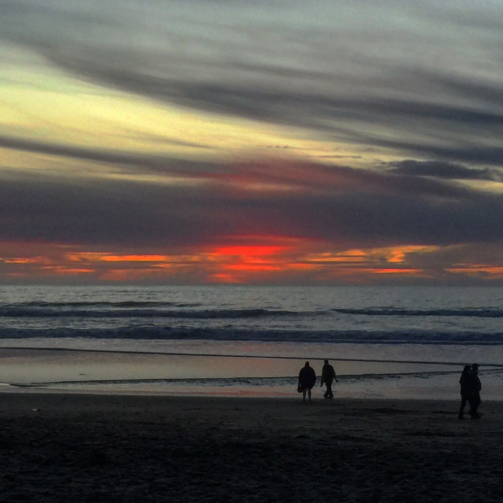
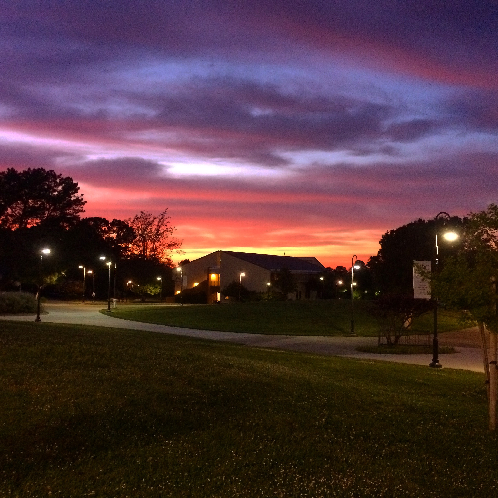
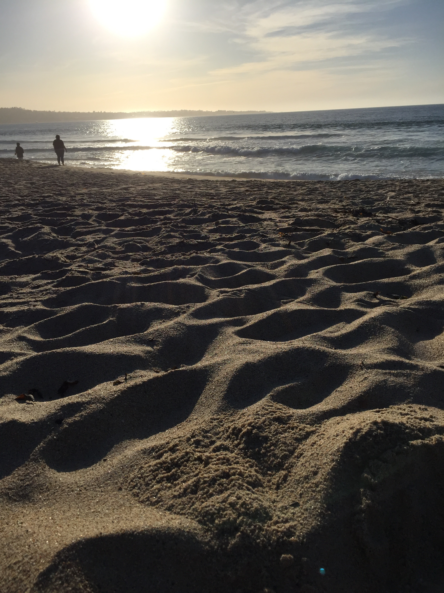
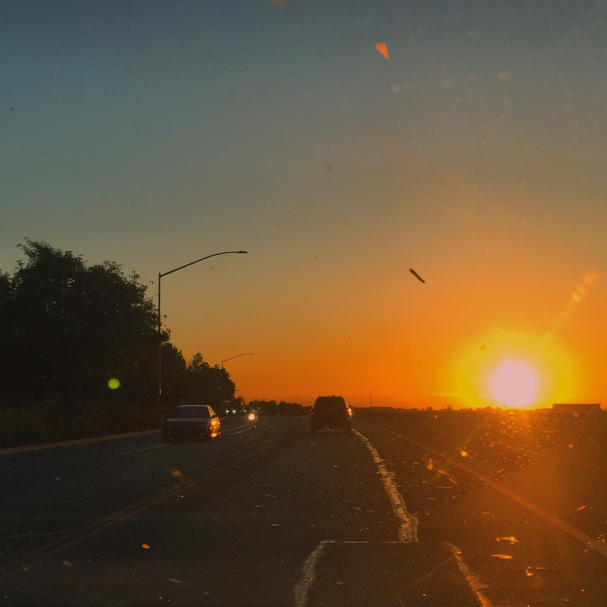
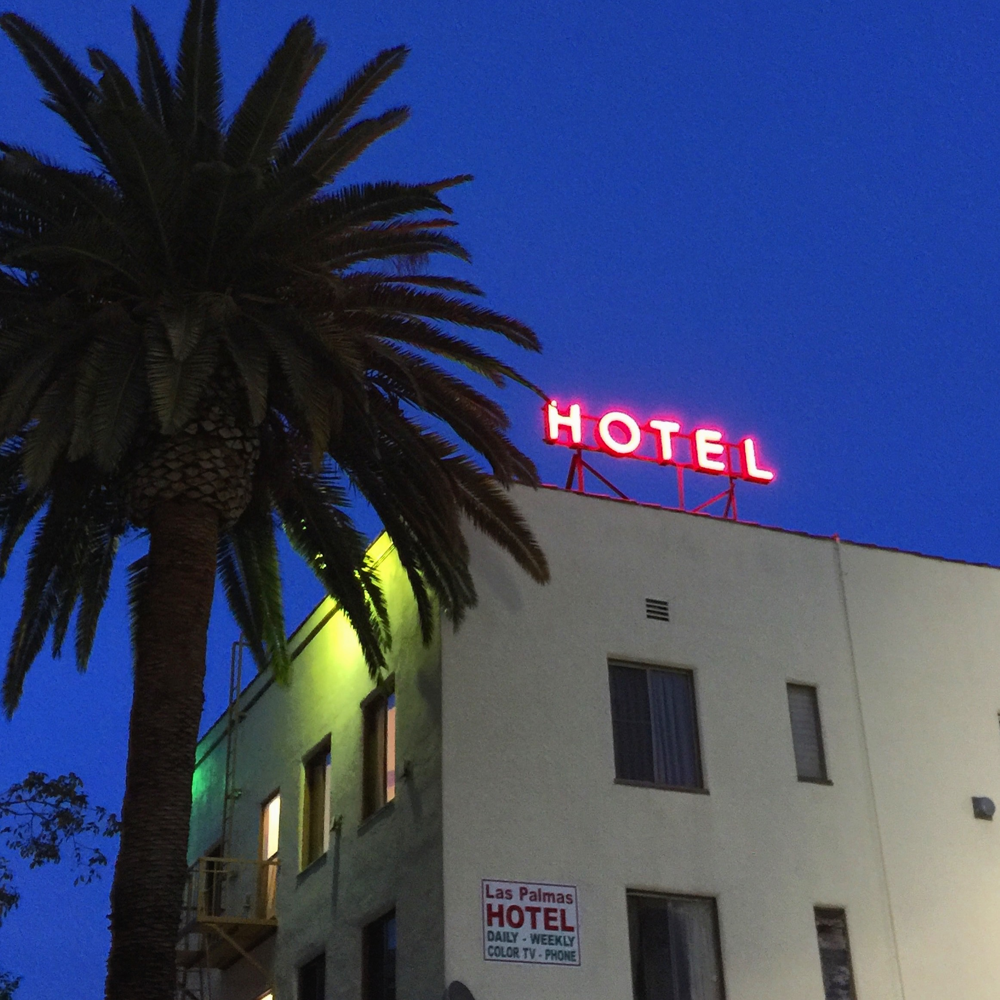

-
Hello,
My name is Joel Aaron Sandoval. I am currently a student at California State University Monterey Bay. I am studying Business Administration with a concentration in Entrepreneurship. I plan to graduate spring 2018. From there, I will be helping run my family's retail store. Simultaneously, I will be preparing for and undertake the Graduate Management Admissions Test and/or the Graduate Record Examination. After a few years of gaining real-world experience, I plan on applying to a graduate program.
My interest in business was sparked early when I discovered what franchises are. From that point, I was greatly intrigued by owning a franchise which later developed into wanting to own my own business. My hopes are to one day run the family business and use my knowledge and experience to help make it thrive.
This website was created to help you learn more about me. Feel free to look around, read about my life, education, and professional background. You can even download my resume or add me on any of the posted social links. There is also a short survey on my contact page, so fill that out if you have a moment. -
Autobiography
My name is Joel Aaron Sandoval Jr. I am the youngest of four children and I am the only boy. I have one nephew and three nieces. I enjoy many pastimes such as swimming, hiking, playing soccer, going to the beach, spending time with friends and family, eating delicious food, and trying new things. I am twenty-two years old and I am a junior in college. Some of my favorite topics include cars and why I believe the tipping system in America is flawed. I have no pets since I’m allergic to dogs and cats and am not a big fan of animals in general. I have lived in America my entire life and have only left mainland America to visit Hawaii. I hope to travel a lot in the future. I have many personal aspirations in my life some of them include owning my own business and designing my own house. Personally, I believe that I am a hard worker and am motivated to reach my own version of success.
Here are some pictures that I have taken. Feel free to click on them in order to see them enlarged.
    
Here are some places that I would like to visit in the future.
-
Currently
Currently, I am a junior finishing up my second semester at California State University Monterey Bay, which is located in Marina, CA. I am studying business with a concentration in entrepreneurship. I am currently holding a 4.0 GPA from CSUMB and am attempting to keep it above a 3.8 for the remainder of my time there. I am planning to graduate in the Spring of 2018. I am planning on taking the GRE and GMAT exams as I would like to attend graduate school in the coming years to receive my MBA. With my degree, I hope to start my own business in the future.
Junior College
For junior college, I attended Monterey Peninsula College, which is located in Monterey, CA. I spent three years at MPC while deciding what major I wanted to pursue.
High School
I attended Trinity Christian High School, which is a small school located in Monterey, CA. I was one of thirteen students in my class and I graduated with a 4.0 GPA.
-
2015-2017
I am currently working for my family's retail business called Lizzie G & Me. We own two women's boutique stores on Main Street in Oldtown Salinas. My mother manages one store while I manage the other. My hopes are to help my family expand this business to different areas of California and into different states in the future.
2012-2015
In 2012 I received my first job at Hollister Co. as a sales associate. As I gained experience, I quickly became one of the top employees. I was given more responsibilities and was considered to be a go-to for information and new employee training.
Download Joel's Resume

-
Feel free to contact me on any of the following social networking platforms or at any of the following email addresses:
Sandovaljoel898@gmail.com
Josandoval@csumb.edu


If you have a moment, please take this short survey.